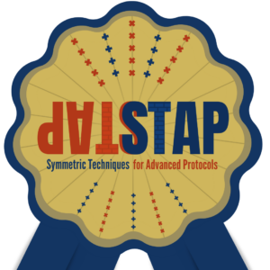

What is STAP?
The term STAP (Symmetric Techniques for Advanced Protocols) was first introduced in STAP’23, an affiliated workshop of Eurocrypt’23.
It generally refers to algorithms in symmetric cryptography specifically designed to be efficient in new advanced cryptographic protocols. These contexts include:
- Zero-knowledge (ZK) proofs
- Secure multiparty computation (MPC)
- (Fully) homomorphic encryption (FHE)
It encompasses everything from arithmetization-oriented hash functions to homomorphic encryption-friendly stream ciphers.
The STAP Zoo Collection
A repository of symmetric primitives designed for advanced cryptographic protocols.
Exploring the Zoo
We present a collection of proposed symmetric primitives fitting the STAP description and keep track of recent advances regarding their security and consequent updates.
- Primitive Types: Block Ciphers, Stream Ciphers, Hash Functions, and PRFs.
- Use-Cases: FHE (Fully Homomorphic Encryption), MPC (Secure Multi-Party Computation), and ZK (Zero-Knowledge).
What we provide for each primitive:
- Origins: Designers, year, and original publication.
- Design: Cryptographic properties, diagrams, and parameters.
- Security: Known attacks, weaknesses, and security margins.
- Efficiency: Hardware implementation metrics.
- Lineage: Relations between different designs.
If you wish to cite this project, please use the BibTeX entry below:
@misc{stapzoo2026,
title = {STAP-Zoo: Symmetric Techniques for Advanced Protocols},
author = {STAP-Zoo Team},
year = {2026},
url = {https://stap-zoo.example.org}
}
Read more about credits on our About Us page.
The website is still under active development
We are constantly adding new primitives and updating security analysis. Check back often!